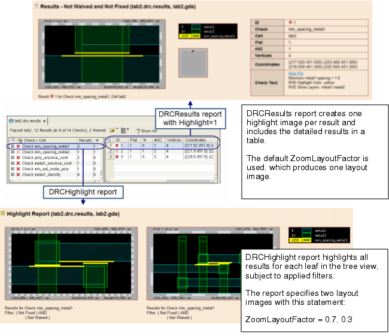

You can add highlight
images to the DRC HTML report using a DRCResults or DRCHighlight
report section.
Highlights in the two report sections behave
as follows:
Highlights in the DRCResults report
section — Generates a highlight image for each individual result,
along with detailed results information.
DRCHighlight report section — Generates
one image with all highlights corresponding to a leaf in the tree
view.
The two different types of highlight reports
are shown in the following figure; instructions for creating the
reports are given following the figure.
Figure 1. Highlight Results in DRC HTML Report
Procedure
- Do one or both of the following
to specify highlighting in the DRC HTML report:
Specify highlights in the
DRCResults report.
[Results - Not Waived and Not Fixed]
ReportType = DRCResults
GroupBy = Cell/Check
WaivedStateFilter = NotWaived
FixedStateFilter = NotFixed
Highlight = 1
The Highlight key is only valid
in the DRCResults report type. When specified, each result includes
a highlight image. An example report is shown in the upper section
of the example report in “Example for DRC HTML Reporting”.
Include a DRCHighlight
report section in the configuration file.
[Highlight Report]
ReportType = DRCHighlight
GroupBy = Check
WaivedStateFilter = NotWaived
FixedStateFilter = NotFixed
; ; include highlight image at two zoom factors
ZoomLayoutFactor = 0.7, 0.3
WorldView = 0
LayoutWidth = 200
The DRCHighlight report generates
one layout view for each leaf in the GroupBy hierarchy; all results
for that leaf are highlighted in the layout view. This is equivalent
to doing a “Highlight all” action on each leaf in the GroupBy hierarchy.
This report section includes
two layout images at different zoom factors for each highlight;
this is done by giving two zoom factors for ZoomLayoutFactor. An example
report is shown in the lower section of Figure 1.
Tip You can create an overview snapshot of all
results by setting “GroupBy = Overview” in a DRCHighlight report;
see GroupBy for an
example.
- (Optional) To turn off grid
lines and set other display preferences, create a preferences file
and specify the DrvOptionsFilePath key in the Common section of the configuration
file, as explained in the section “Calibre DESIGNrev Display Preferences File for DRC HTML Reporting”. The report in Figure 1 has grid lines turned
off.
- Create a DRC HTML Report Database Map File; this text file lists the results
databases to process and the associated layout file. A simple example
that processes one results database looks like this:
lab2.drc.results,,layout.gds,,
where the commas are required.
The first parameter gives the results database, and the second gives
the layout file. You can also specify a Calibre DESIGNrev layer properties
file; see “DRC HTML Report Database Map File”.
- Specify the configuration
file and database map file on the command line as follows:
calibre -rve -drc ‑input db_map.txt -report rpt.ini -outputdir html_out
where db_map.txt is
the database map file created in Step 3.